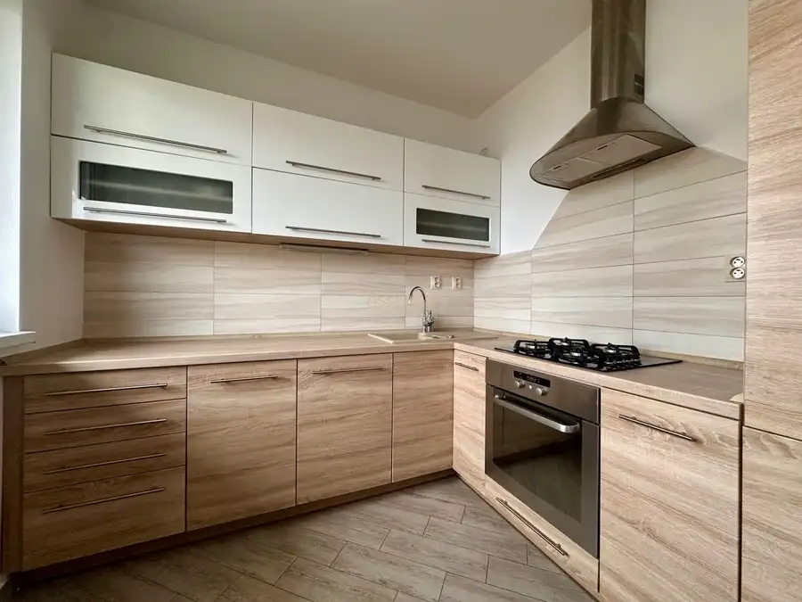
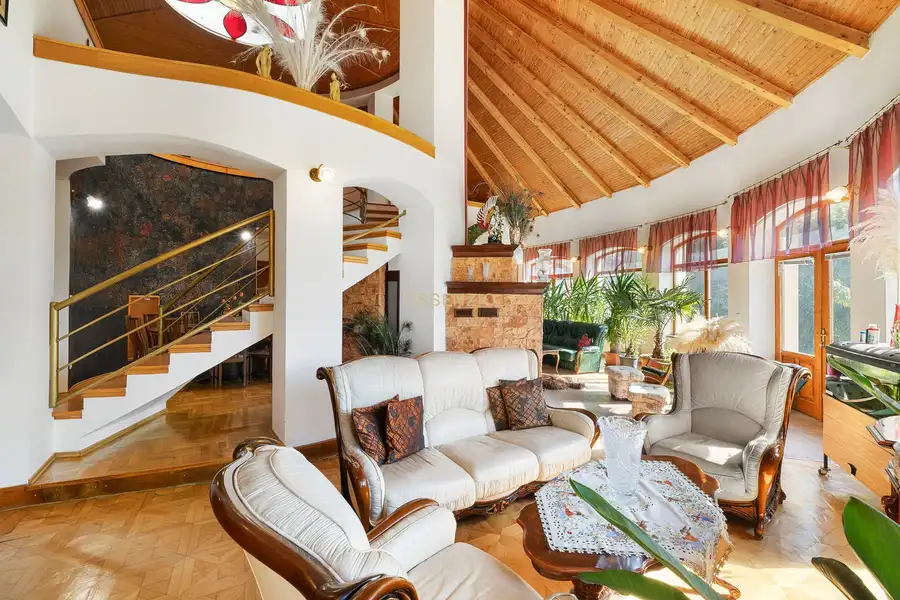

Predaj rekreačnej chaty s pozemkom priamo pri Malom Dunaji
Potônske Lúky
- Dispozícia1-izbový
- Plocha30 m²
- Stavčiastočne prerobený
- Vlastníctvoiné
O nehnuteľnosti
Hľadáte miesto, kde sa spojí kľud prírody s možnosťou aktívneho oddychu?
Ponúkame vám rekreačnú chatu so slnečným pozemkom o výmere 533 m², situovanú v malebnej časti obce Potônske Lúky, priamo pri brehu Malého Dunaja. Výhodou je rýchla dostupnosť – autom ste z Bratislavy za približne 30 minút a z Dunajskej Stredy len za 15 minút.
Výhody lokality:
- súkromný a uzavretý areál s niekoľkými chatami, čo garantuje bezpečie a diskrétnosť,
- priamy prístup k vode cez vlastný vjazd a súkromné mólo,
- na protiľahlom brehu sa nachádza chránený ostrov bez výstavby – maximum pokoja a súkromia,
- stabilná regulácia vodnej hladiny – bez rizika záplav.
Dispozícia a vybavenie chaty:
Chata je funkčne riešená na oddych aj praktické využitie:
priestranná denná miestnosť spojená s kuchynským kútom (rozkladacia posteľ, úložné skrine, chladnička s mrazničkou, dvojplatnička),
kúpeľňa so sprchou a WC,
samostatný sklad na záhradné náradie či kanoe.
Privedená je elektrina, voda zo studne s rozvodom do chaty, bojler, odpad je riešený septikom. Vykurovanie zabezpečuje elektrický radiátor.
Pozemok a exteriér:
priestranná terasa s výhľadom na rieku,
detské ihrisko (drevený domček na vyvýšenej platforme s hojdačkami, šmykľavkou, lezeckou stenou a kormidlom) + trampolína,
ovocná záhradka – jahody, figa, lieskové orechy,
priestor vhodný na ďalšie pestovanie či relaxačnú zónu.
Priamo na pozemku aj v jeho okolí máte bohaté možnosti:
rybolov, splavovanie, paddleboarding alebo plavby loďkou,
cykloturistika a výlety do okolia – Malkia Park, Slovakia Ring, Thermalpark Dunajská Streda
Táto nehnuteľnosť je ideálnym miestom pre rodiny s deťmi, milovníkov vody aj tých, ktorí hľadajú únik z mesta do pokojného prostredia pri rieke.
CENA NEHNUTEĽNOSTI: 139 000€
O celý proces kúpy, vrátane zabezpečenia financovania a všetkých potrebných náležitostí, sa postará spoločnosť ASSENZIO, aby bol pre vás bezstarostný a plynulý.
Fotodokumentáciu zabezpečilo naše špecializované oddelenie. Radi vám pomôžeme s efektívnym a profesionálnym predajom či prenájmom aj vašej nehnuteľnosti. Neváhajte nás nezáväzne kontaktovať – tešíme sa na spoluprácu.
Fotografie a text sú autorským dielom a majetkom spoločnosti ASSENZIO.
Parametre
| Rozloha pozemku | 533 m² |
|---|---|
| Zastavaná plocha | 35 m² |
| Úžitková plocha | 30 m² |
| Počet poschodí | 1 |
| Počet izieb | 1 |
| Vlastníctvo | iné |
| Stav | čiastočne prerobený |
| Voda | studňa |
| El. napätie | 230V |
| Plyn | nie |
| Kanalizácia | žumpa |
| Internet | nie |
| Kúpeľňa | sprchovací kút |
| Vykurovanie | vlastné - elektrické |
| Pivnica | nie |
| Garáž | nie |
| Parkovanie | áno |
| Inžinierske siete | nie |
| Postavené z | Zmiešané |
| Zariadenie | čiastočne |
| Zateplený objekt | nie |
| Strecha | po rekonštrukcii |
| Krb | nie |
| Klimatizácia | nie |
| Káblová televízia | nie |
| Energetický certifikát | nie |
| Bezbariérový prístup | áno |
| Okná | plastové |
| Terén | rovina |
| Prístupová cesta | neupravená cesta |
| Dátum zverejnenia | 22. 9. 2025 |
Kde to je
Mohlo by Vás zaujímať

Byt9 229 900 €| PREDAJ | 3 izbový byt s veľkou loggiou – Banšelova, Ružinov Ružinov, Bratislava 3-izbový68 m²4. podlažie Assenzio Property ponúka na predaj príjemný a svetlý 3-izbový byt nachádzajúci sa vo vyhľadávanej časti Bratislava – Ružinov, Trnávka, na Banšelovej…
Rodinné domy10 Cena dohodouLuxusná vila s atmosférou – 10 izieb – bazén – 5100 m² Dunajská Streda 11-izbový551 m² Miesto, kde má každý začína pokojom. Dom ukrytý v zeleni, ktorý ponúka viac než bývanie – ponúka životný štýl. Každý detail je navrhnutý tak, aby ste…